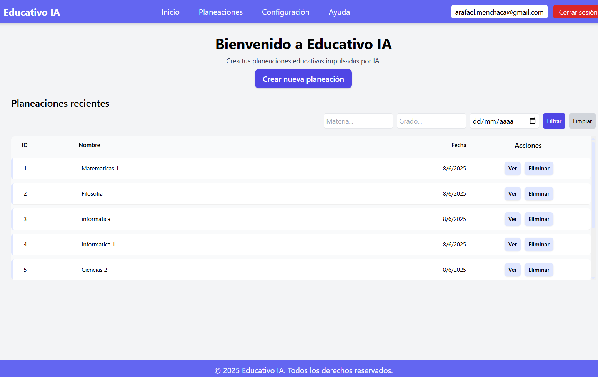

Jerarquía visible
5 niveles
Plantel, grado, materia, unidad y tema en una misma ruta.
Educativo IA convierte la planeación en un sistema operativo claro: organizas tu jerarquía académica, agregas temas, generas con IA y luego editas cada propuesta antes de exportarla.
Jerarquía visible
5 niveles
Plantel, grado, materia, unidad y tema en una misma ruta.
Edición directa
Celda por celda
Ajusta la propuesta sin reconstruir la tabla completa.
Exportación
Word + Excel
Entrega formatos listos para compartir con tu equipo.
Ruta activa
Temas guardados
Generación en tiempo real

Tiempo ahorrado
Horas
Menos captura manual, más revisión pedagógica.
Control
Detalle editable y exportable
Sin perder la estructura Excel-like que ya funciona.
Por qué cambia el flujo
Cada planeación muestra de qué plantel, grado, materia y unidad proviene.
Entras al detalle, activas edición y ajustas celdas con feedback visual.
Agregas temas en una unidad y ves el progreso de cada planeación en tiempo real.
Cómo se siente
Abres planteles, grados, materias y unidades desde un panel lateral persistente.
La unidad mantiene el foco en temas guardados y abre el panel de staging cuando haces clic en agregar.
La tabla se mantiene, pero el detalle ahora indica con claridad dónde nació cada planeación.
Planes
Puedes comenzar con un flujo individual y luego consolidar la operación de varias áreas académicas bajo la misma lógica jerárquica.
Ver planesDocente
Inicio rápido
Genera y edita tus propias planeaciones desde una sola cuenta.
Equipo
Coordinación
Mantén un orden uniforme entre grados, materias y unidades por academia.
Institución
Operación completa
Estructura centralizada, seguimiento de uso y exportación de entregables.
Equipo docente
El sistema acelera la construcción inicial, pero la última palabra sigue estando en el detalle editable, en la jerarquía visible y en la exportación final.